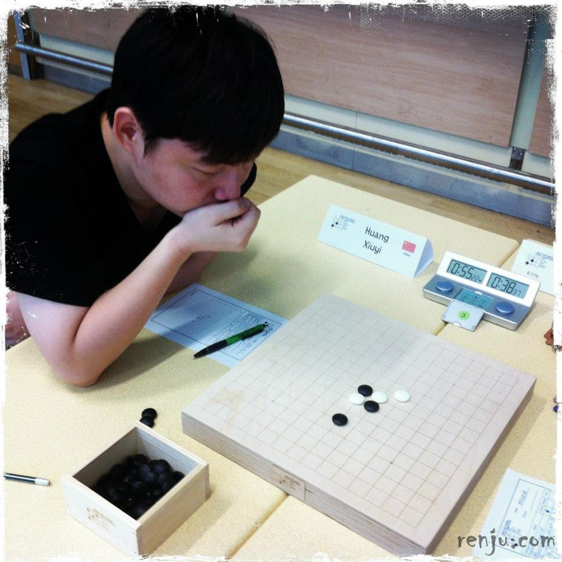
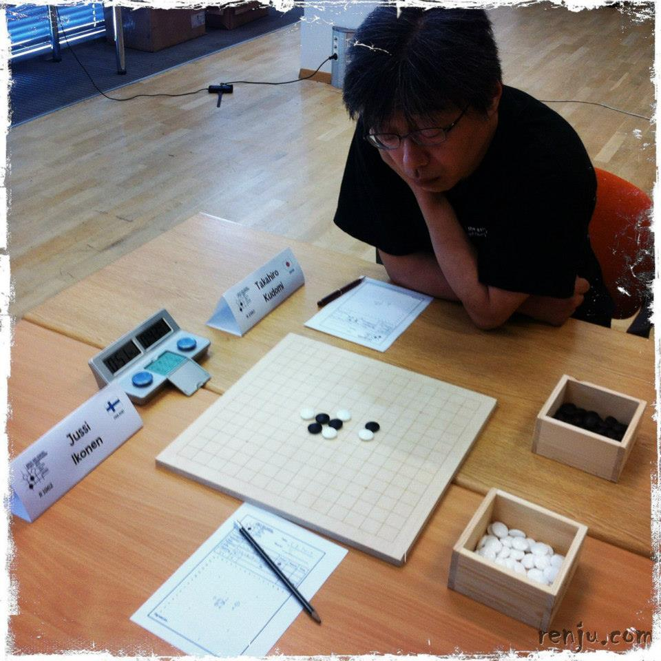
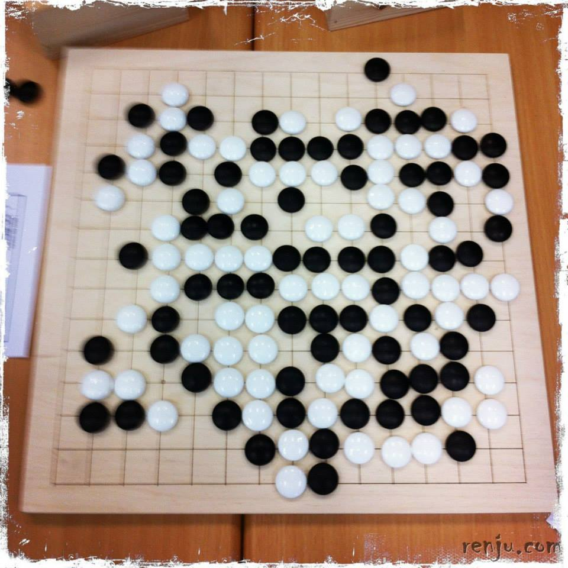
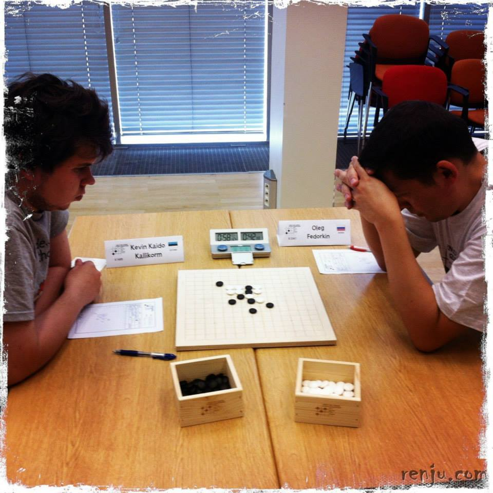
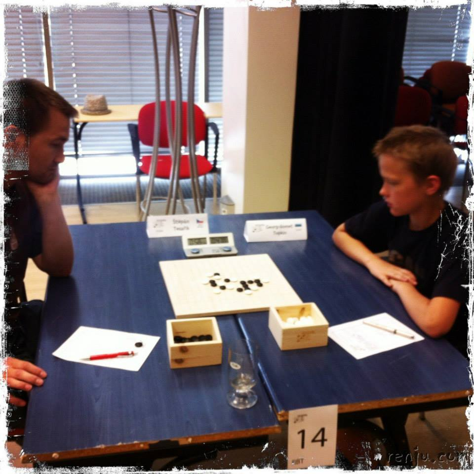
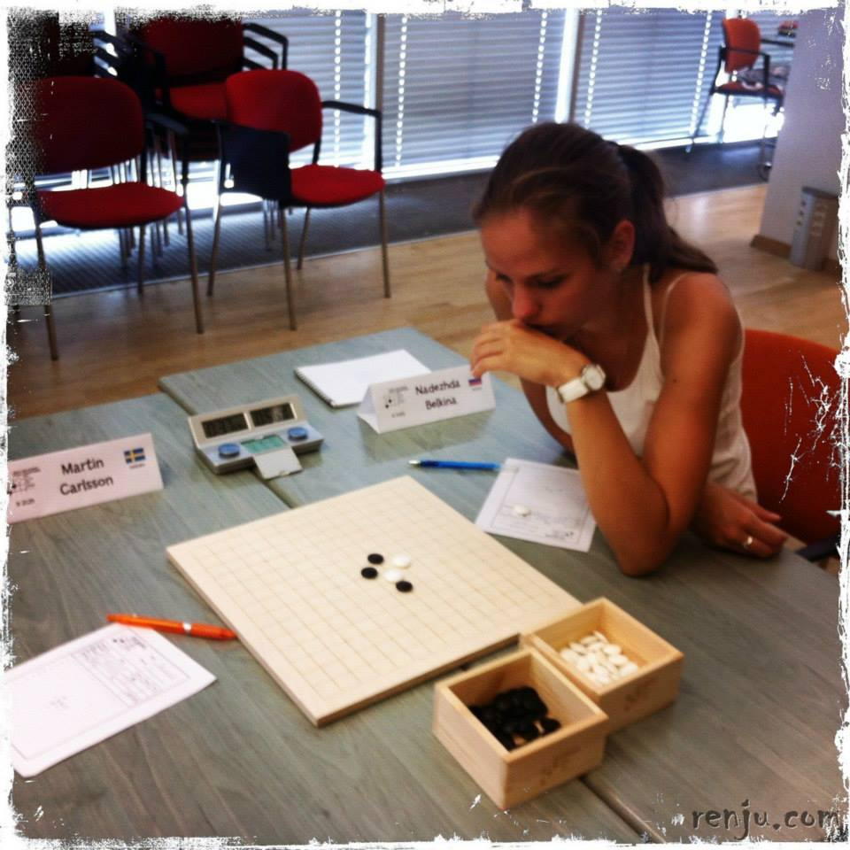
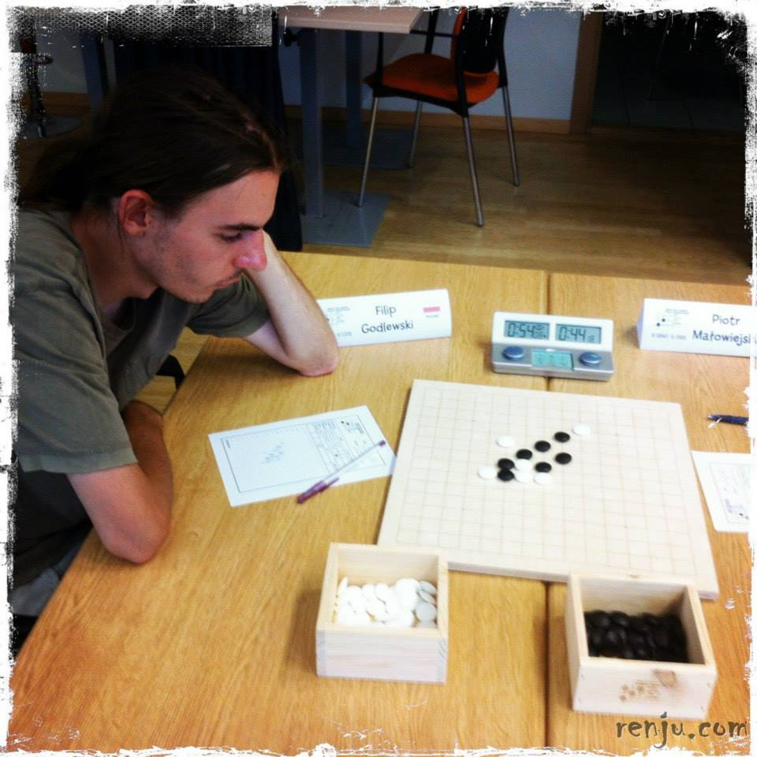
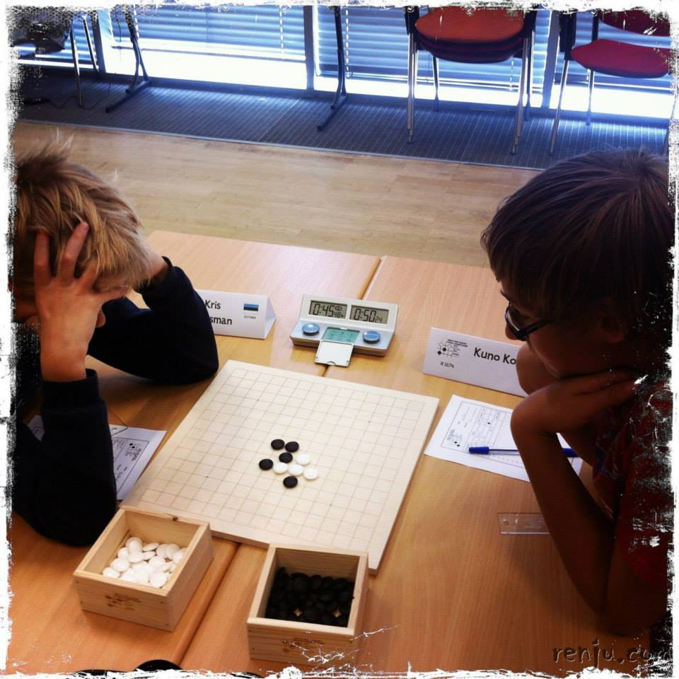
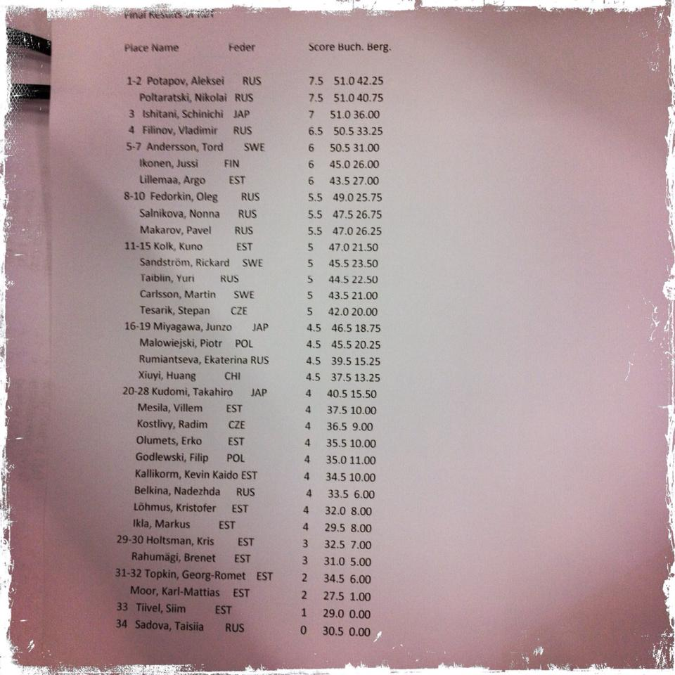

2013年世\一休哥
首页
五子棋新闻
#1 2013年世\一休哥 作者：m妮 发表时间：2013-8-10 16:13:22
原作者:Jussi Ikonen
PO完ＡＴM棋手清清曹冬m志仁~~
e忘了有一位中棋手S修一~~
就硇蕾p他在ＢＴ比的r吧~~










左是m志仁,右是S修一~他去^光了XD
［ 忧郁的双眼 于 2013-8-18 23:33:44 时奖励此帖[金币加 100 威望加1］
#2 Re:2013年世\一休哥 作者：怪 发表时间：2013-8-10 16:18:07
和美女注册时间差不多，缘分啊~
#3 Re:2013年世\一休哥 作者：一休哥 发表时间：2013-8-11 6:18:05
他什么时候去偷拍我了
#4 Re:2013年世\一休哥 作者：茗弈妙手 发表时间：2013-8-11 9:59:20
赫然发现BT组出现何种局面都是有可能的。。
#5 Re:2013年世\一休哥 作者：一休哥 发表时间：2013-8-18 23:08:06
必然的嘛，B组上到原A组棋手，下到初学者，都包含在内这次可惜没碰到一个日本的棋手进行学习